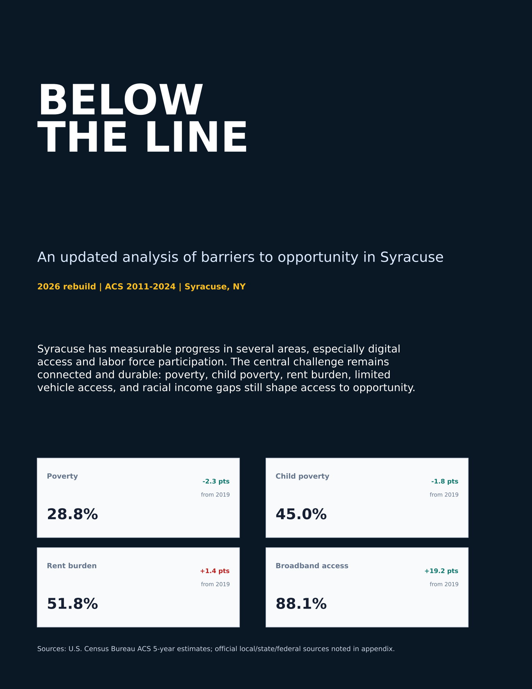
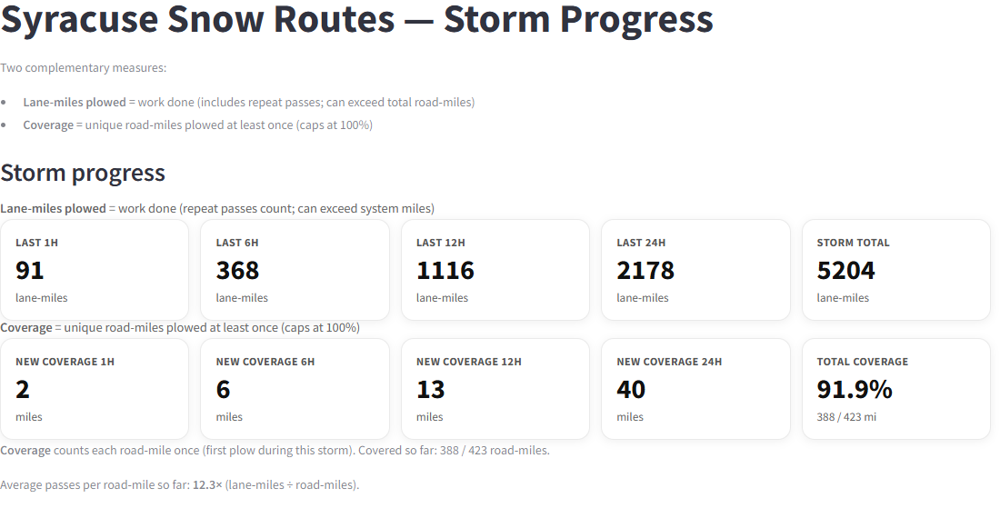
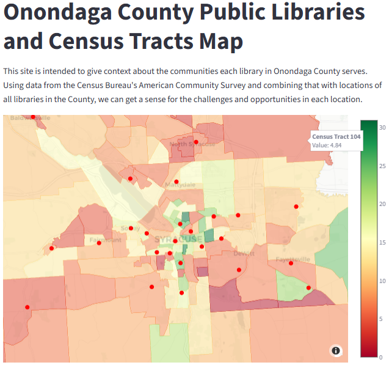
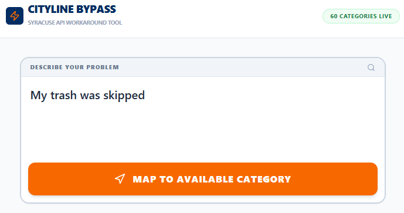
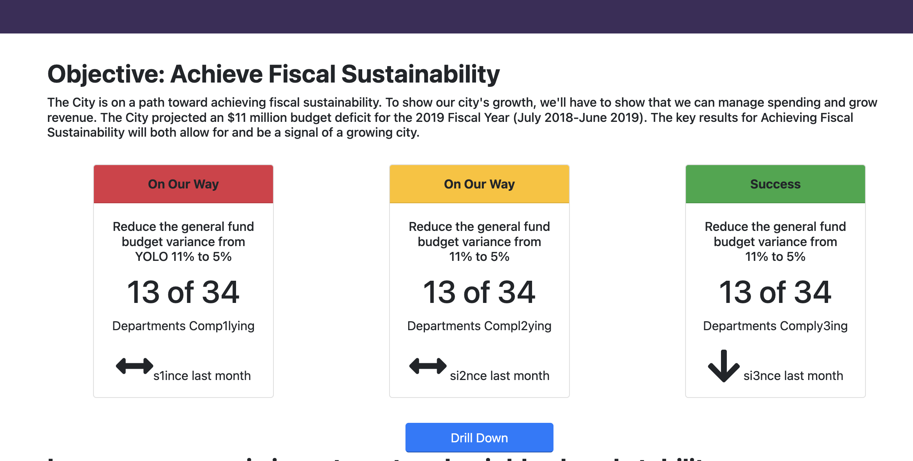

Interactive Analysis April 29, 2026
Below the Line 2026
Rebuilding the original poverty analysis with expanded metrics, peer-city baselines, and careful notes on COVID-era data quality.
Built for the 315
Interactive tools, maps, and civic data stories about Syracuse, Onondaga County, and the systems residents use every day.
Hero image: public-domain Clinton Square / Erie Canal postcard via Wikimedia Commons.
Project desk
Maps, dashboards, and local workflows built around real Syracuse questions.

Interactive ReportPoverty Data
An updated look at Syracuse poverty, housing, education, work, transportation, broadband access, and peer-city change since the original report.
Launch project →
Streamlit AppSnow
Real-time visualization of snow removal progress and plow locations across the city's residential streets.
Launch project →
Streamlit AppLibraries
Explore demographic insights and library usage patterns across Onondaga County through an interactive dashboard.
Launch project →Libraries
A public-facing look at city library visits, circulation, digital use, programming, and Central versus branch patterns.
Read story →
AI Web AppCivic Services
An alternative interface to help residents decide how to submit a service request through Syracuse's Cityline system.
Launch project →
Performance DashboardCity OKRs
A source-backed rebuild of the city performance dashboard using the original OKRs, current public data, and clearly labeled gaps.
Launch project →Field notes
Long-form analyses and build notes from the local data stack.
Interactive Analysis April 29, 2026
Rebuilding the original poverty analysis with expanded metrics, peer-city baselines, and careful notes on COVID-era data quality.
Library Data May 2026
A public reporting page that turns the latest city library dashboard into a readable civic data story.

Launch Essay March 21, 2026
How Syracuse open data, OCPL library workflows, and county, state, and federal sources came together in one MCP server.
Data Analysis December 31, 2025
A look at how residents make snow plow service requests to Cityline, even when there is no official option to do so.